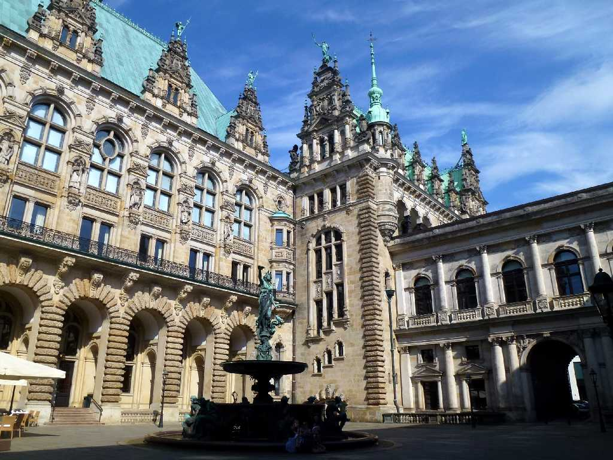
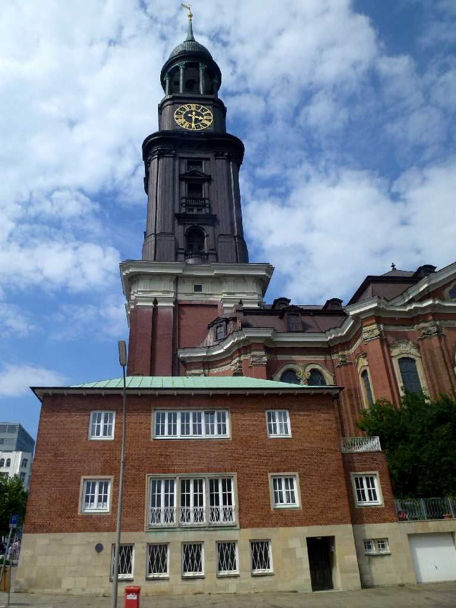
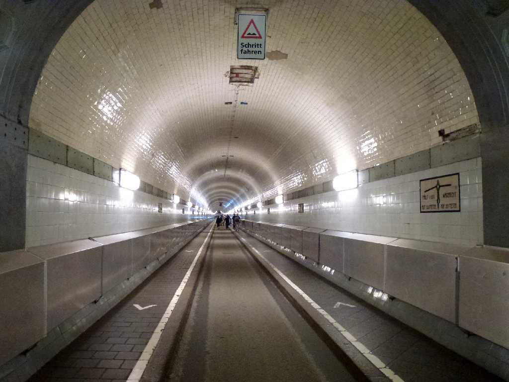
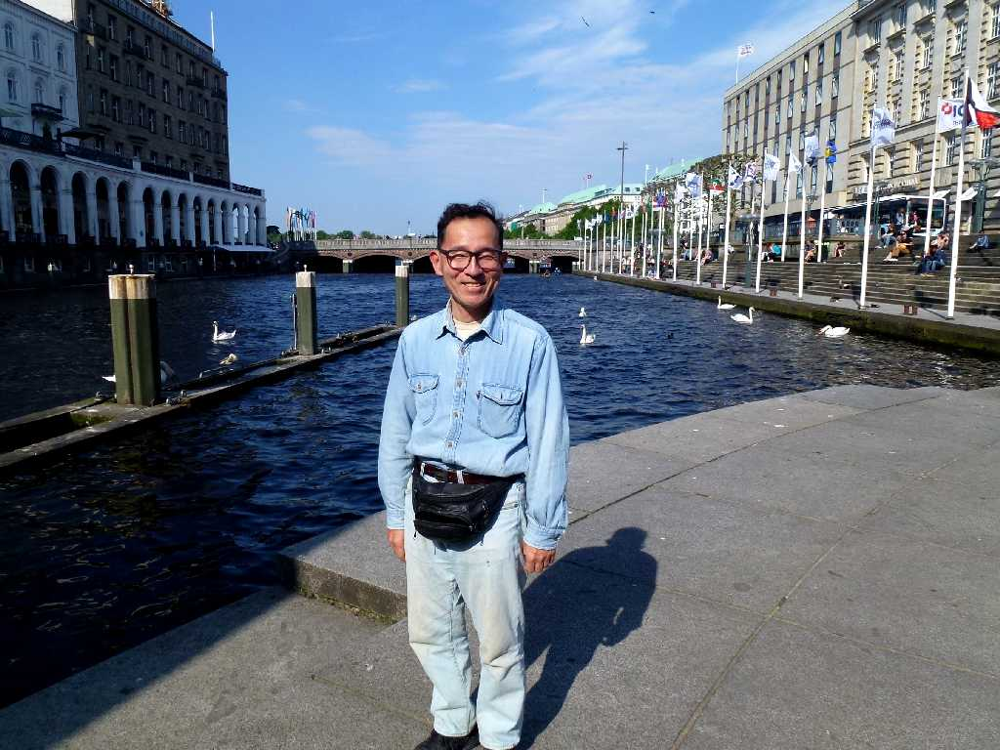

Rathaus Hamburg
ドイツ最大の港湾都市で北の華と云われた文化都市ハンブルグの１８８６年に創られた新ルネッサンス様式の市庁舎

Michaeliskirche
１７６２年に創られたバロック様式の聖ミカエル教会はブラームスが洗礼を受けた教会として知られている

Elbtunnel
１９１１年に創られたエルベトンネルは対岸に馬車を通すためのトンネルであったが今は自動車や自転車等が利用している

May 26 2014 Hamburg